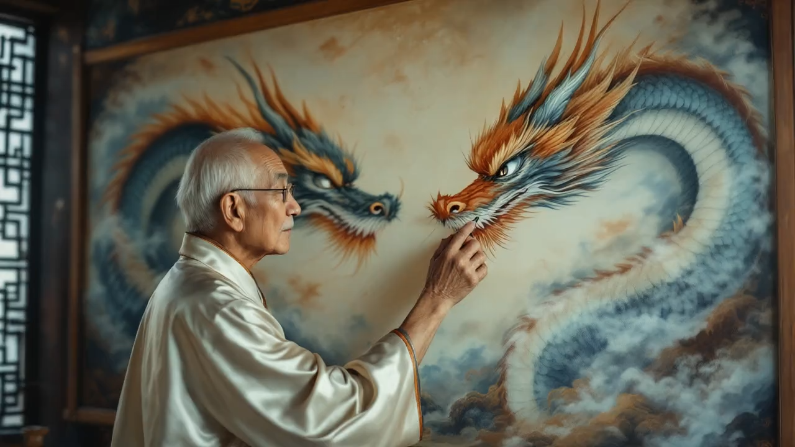
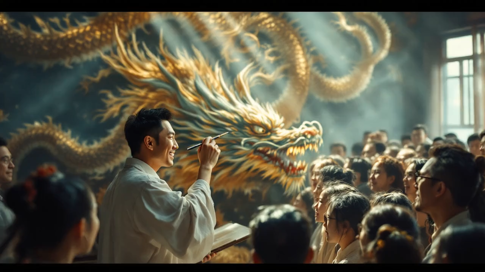
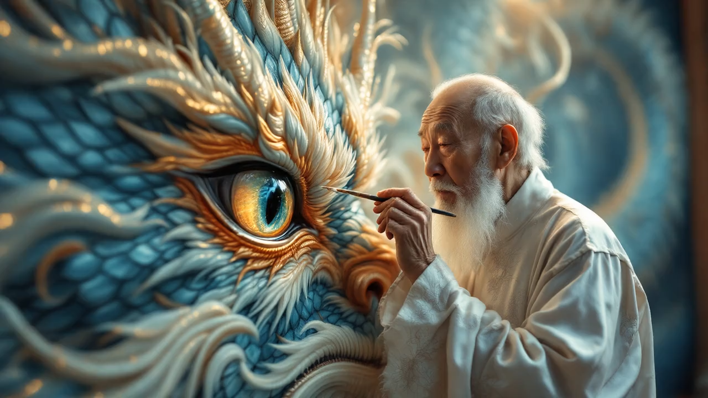
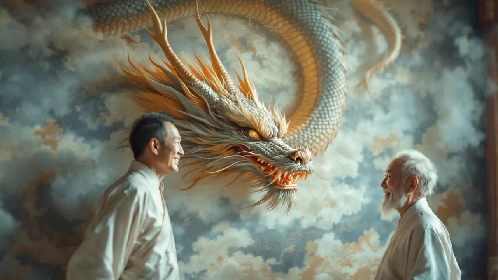
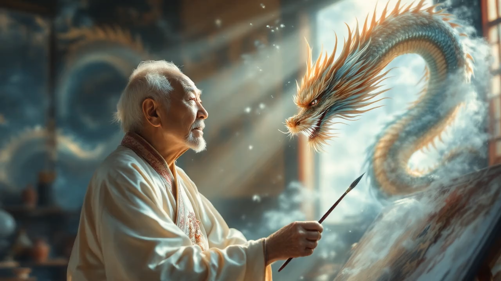

视频展示
音频信息
- 背景音乐：《梦境》
视频说明
本视频通过AI技术，将中国传统成语"画龙点睛"以动画形式重现。整个过程展现了从画家构思、众人观看到龙腾飞的完整故事，配以古风背景音乐和专业解说，带您感受中国传统文化的魅力。
关键帧描述
- 一位年长的画家身穿传统服饰，站在墙前，墙上画着两条栩栩如生的龙。画家神情专注，手指轻轻划过其中一条龙的眼睛，背景是一个古色古香的房间。
- 众人围在画家身边，神情怀疑，指着墙上的龙。画家微微一笑，手中握着一支画笔，轻轻挥动，阳光透过窗户洒在众人身上。
- 画家将画笔靠近其中一条龙的眼睛，龙的鳞片在光线下闪烁。画家神情专注，手腕轻轻移动，墙壁的细节清晰可见。
- 画家点上龙的眼睛，龙的眼睛突然闪烁出光芒，龙的身体开始微微颤动，墙上的画面栩栩如生。
- 龙从墙上飞出，翅膀展开，龙的身体在空中盘旋。众人惊讶地抬头仰望，阳光照耀在龙的鳞片上，闪烁着耀眼的光芒。
- 另一条龙仍然留在墙上，静止不动，墙壁的细节和龙的纹理清晰可见。画家微笑着看着墙上的龙，轻轻点头。
- 飞翔的龙在空中盘旋，翅膀拍打，龙的眼睛闪烁着智慧的光芒。龙在空中翻滚，背景是蓝天白云。
- 众人欢呼雀跃，指着空中的龙，脸上露出惊讶和喜悦的表情。人群中有人跳跃，有人鼓掌，阳光洒在他们的脸上。
- 画家满意地看着飞翔的龙，手中握着画笔。背景是墙上仍然留着的另一条龙，阳光透过窗户洒在房间里，画家轻轻挥动画笔。
关键帧展示

第一幕：画家凝视

第二幕：众人怀疑

第三幕：点睛准备
第四幕：点睛时刻

第五幕：龙腾飞

第六幕：静待时机
第七幕：腾云驾雾
第八幕：众人惊叹

第九幕：画家微笑